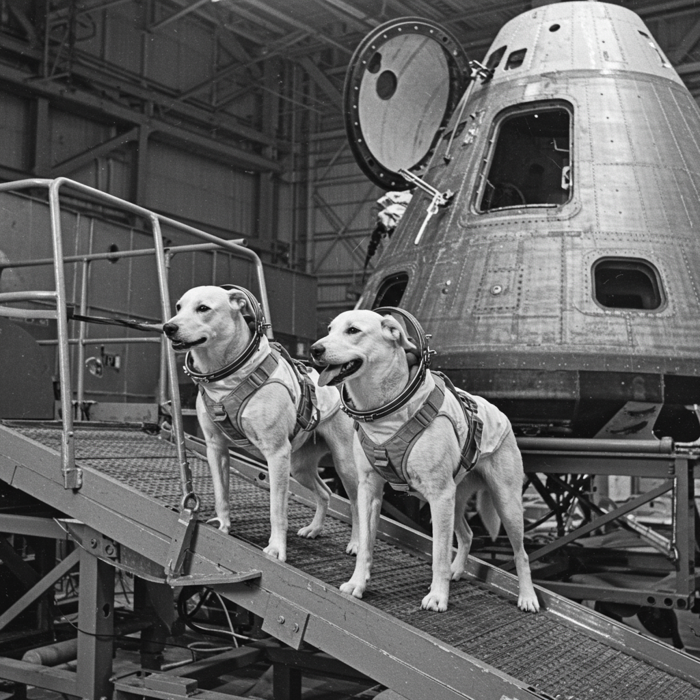
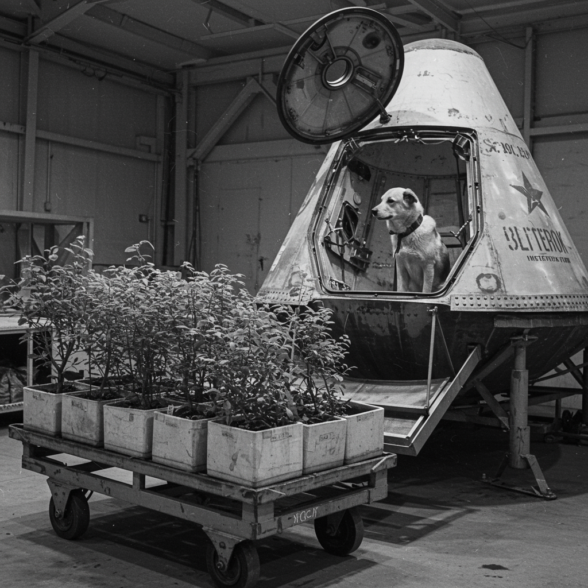

Misión Kosmos 110
Ficha General
- Fecha de lanzamiento: 22 de febrero de 1966
- Duración total: 21 días y 22 horas
- Nación: Unión Soviética
- Órbitas completadas: 330
- Altitud promedio: 200 km
- Recuperación: Cápsula recuperada con éxito en la URSS
- Estado final de los sujetos: Débiles pero vivos
Tripulación Biológica
- Veterok: Perro macho, altamente entrenado, nombre significa “brisa ligera”.
- Ugolyok: Perro macho, menor tamaño, nombre significa “carboncito”.
Objetivo de la Misión
Kosmos 110 fue diseñada para estudiar los efectos prolongados de la microgravedad en organismos vivos. Se trató del experimento más largo en órbita con perros, con el objetivo de validar la viabilidad de futuras misiones humanas de larga duración.
Carga Biológica
La cápsula transportó dos perros junto con plantas, semillas, hongos, bacterias y otros organismos vivos. Además, estaba equipada con sensores para monitoreo fisiológico y condiciones automatizadas de soporte vital.
Impacto y Legado
Kosmos 110 rompió todos los récords de duración biológica en órbita y fue clave para el desarrollo de la tecnología Soyuz y de estaciones espaciales. Fue también la última misión soviética en enviar perros al espacio. Veterok y Ugolyok no volaron más, pero su legado quedó grabado como pioneros silenciosos de la exploración prolongada.
⬅ Regresar al Archivo X